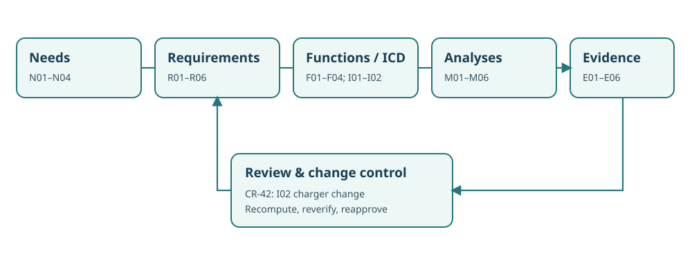

Northstar NS-MBA9.1 — Integrated model analytics dossier
This fictional, self-contained model accompanies all twelve chapters of Book 9: Applied Analytics for Model-Based Systems Engineering. It models a proposed winter/accessibility mobility expansion rather than claiming field performance or qualification. Its purpose is to expose the engineering logic linking a requirement, a model relation, a numerical estimate, and the evidence required to make a release decision.

Controlled artifacts
- Canonical model and architecture candidates: stakeholder needs, requirements, functions, owned interfaces, alternatives, relations, assumptions, and analysis runs.
- Requirement register: six requirements with measurable attributes and verification routes.
- Evidence register: model-derived results, a missing accessibility experiment, and a stale concurrency test.
- Supplier change CR-42: charger power and efficiency move from 30 kW/90% to 27 kW/82%, requiring model re-evaluation.
- Reproducible standard-library Python model audit: execute with
python3 step03_book9_model_check.pyfrom any directory.
Key engineering decisions
The baseline alternatives assume 20 kWh per vehicle per operating day, a peak nominal throughput requirement of 14 trips/hour, daily energy no greater than 260 kWh, and a 2.5-hour charging opportunity. Variant A has 10 vehicles with a 45-minute cycle; variant B has 12 with a 48-minute cycle; variant C has 14 with a 50-minute cycle. Variant B passes the deterministic capacity and energy screens, while A lacks modeled capacity and C exceeds the daily-energy limit. These are screening outcomes, not throughput guarantees under stochastic demand.
Variant B requires 240 kWh/day. Four 30-kW chargers over 2.5 hours at assumed 90% efficiency deliver 270 kWh, a nominal 30 kWh charging margin. After supplier change CR-42, four 27-kW chargers at 82% efficiency deliver 221.4 kWh, a 18.6 kWh deficit. A proposed fifth charger would raise modeled recovery to 276.75 kWh, before physical interface or procurement validation. This illustrates how one interface change can invalidate a prior analysis.
Review disposition: CONDITIONAL STUDY ONLY. The modeled results support selecting variant B for further testing but not authorizing winter operations. Accessible-service statistics have not been collected on the current baseline, the assignment-safety demonstration applies to an old baseline, and a model-generated 440-ms response is not percentile compliance evidence.
Reproducibility and limitations
Run the audit to calculate the trade-space screens, report evidence applicability, and traverse the typed dependency links affected by CR-42. Inject invalid IDs, stale baselines, incompatible units, or malformed relations to see automated checks fail. Its JSON graph is not a SysML v1/v2 parser or a proof of formal language conformance; model consistency does not substitute for tool validation, physical measurement, safety assessment, or acceptance authority. All data are synthetic.
Method references
- NASA, Systems Modeling Handbook for Systems Engineering, NASA-HDBK-1009A (2025), for modeling plans, model content, analysis integration and engineering products.
- Object Management Group, SysML v2.0 Language Specification (2025), for normative language semantics and conformance. The standalone Python graph checker does not claim that conformance.